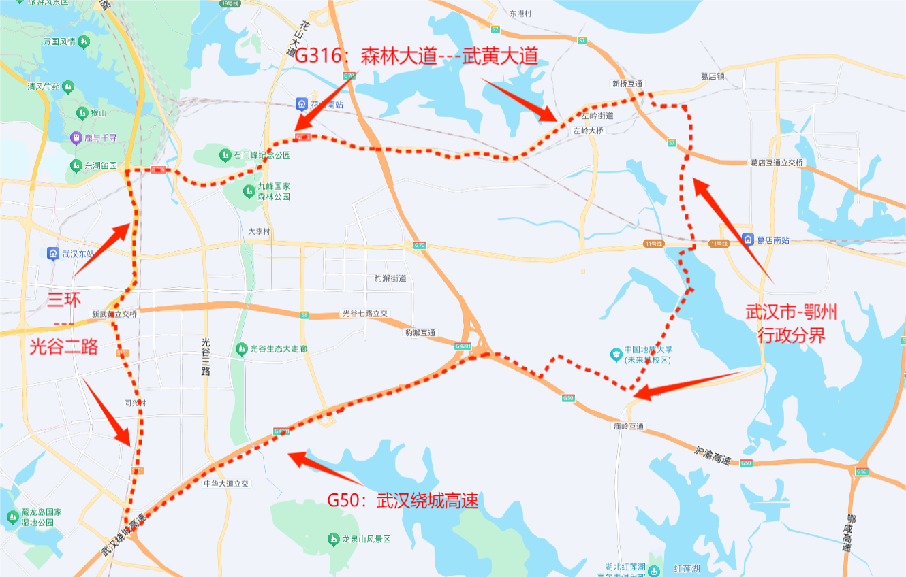

2026年市场开发部光谷东片区激励方案1.0
一、方案目的
为激活光谷东片区市场潜力、释放业务增长动能，抢抓光谷东片区发展机遇、挖掘市场增量空间，激发一线人员拓店攻坚与服务优化的主动性，特推出本片区阶段性激励方案，加速区域业务布局、夯实市场根基。
二、方案约束
该方案是作为《2026年市场开发部本埠外埠区域划分规定2.0》及《2026年市场开发部原东部战区激励方案1.0》的后续阶段性激励方案，故执行前提是在以上两个方案的约束范围内的。
三、阶段性激励奖励标准
1、市场开发部本埠战区开发员，在光谷东区域成功开店的，除正常开店提成外，额外享受1000元/店奖励；对应开发员所属战区的开发主管，额外享受200元/店奖励。
2、开发员和开发主管的额外奖励实行累积发放制，每累积达成2家门店发放1次，发放金额分别为2000元、400元；该奖励以自然年为统计周期，周期内未累积满2家门店的，奖励自动失效，不予发放。
3、本次激励政策限定2026年全年（2026.1.1-2026.12.31）在15家以内（含15家），超出的店数以正常开店核算提成，不享受以上1、2条中设定的奖励。
4、本次激励奖励的发放时间，与正常开店提成保持一致，发放进度同步全款到账节点执行。
四、光谷东片区区域界定
东起武汉鄂州行政分界线，西至东三环与光谷二路沿线，南抵G50武汉绕城高速，北达G316国道。

本方案自2026年1月1日起正式试行，试行期为3个月，试行期满若无调整，自动延续执行。本方案2026年12月31日终止执行，届时部门视前期执行情况迭代新版激励方案报总经办审批。
市场开发部
2025年12月23日